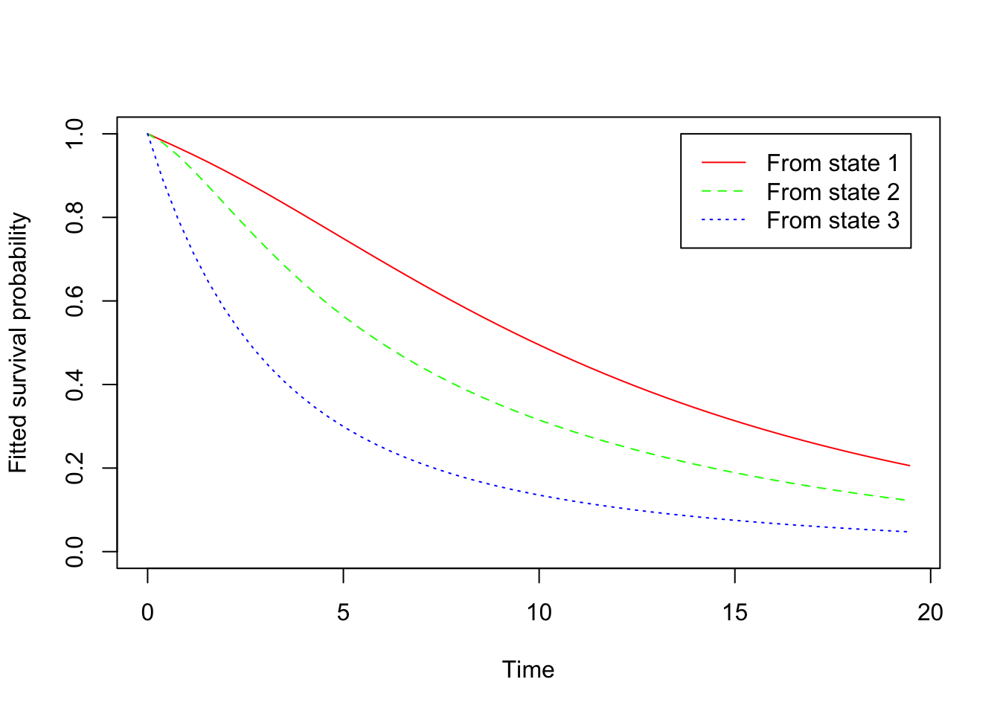

library(msm)
library(mrgsolve)
library(dplyr)
library(minqa)
options(pillar.width = Inf)1 Introduction
This post shows how you can fit a multi-state model with mrgsolve. The post is still in draft mode, but I’m pushing it out to the blog in order to share it with someone who was asking about it.
Updated July 29, 2024 to use mrgsolve 1.5.1 which introduces a replace() function in the evt namespace (see the evtools plugin). The evt::replace() syntax is just like evt::bolus(), but we replace the the amount in the indicated compartment, rather than adding to it. This utilizes EVID = 8, a long-standing feature in mrgsolve, which can conveniently be called from within your model starting with 1.5.1.
We’ll estimate a multi-state model using the cav data from the msm package using both msm and mrgsolve.
statetable.msm(state, PTNUM, data=cav) to
from 1 2 3 4
1 1367 204 44 148
2 46 134 54 48
3 4 13 107 55The cav data is a “series of approximately yearly angiographic examinations of heart transplant recipients. The state at each time is a grade of cardiac allograft vasculopathy (CAV), a deterioration of the arterial walls.” ((link)[https://chjackson.github.io/msm/reference/cav.html]).
1.1 Fit the model with msm
We’ll use this transition matrix
qq <- rbind(
c(0, 0.25, 0, 0.25),
c(0.166, 0, 0.166, 0.166),
c(0, 0.25, 0, 0.25),
c(0, 0, 0, 0)
)
qq [,1] [,2] [,3] [,4]
[1,] 0.000 0.25 0.000 0.250
[2,] 0.166 0.00 0.166 0.166
[3,] 0.000 0.25 0.000 0.250
[4,] 0.000 0.00 0.000 0.000cav.msm <- msm(
state ~ years,
subject = PTNUM,
data = cav,
qmatrix = qq,
deathexact = 4
)
cav.msm
Call:
msm(formula = state ~ years, subject = PTNUM, data = cav, qmatrix = qq, deathexact = 4)
Maximum likelihood estimates
Transition intensities
Baseline
State 1 - State 1 -0.17037 (-0.19027,-0.15255)
State 1 - State 2 0.12787 ( 0.11135, 0.14684)
State 1 - State 4 0.04250 ( 0.03412, 0.05294)
State 2 - State 1 0.22512 ( 0.16755, 0.30247)
State 2 - State 2 -0.60794 (-0.70880,-0.52143)
State 2 - State 3 0.34261 ( 0.27317, 0.42970)
State 2 - State 4 0.04021 ( 0.01129, 0.14324)
State 3 - State 2 0.13062 ( 0.07952, 0.21457)
State 3 - State 3 -0.43710 (-0.55292,-0.34554)
State 3 - State 4 0.30648 ( 0.23822, 0.39429)
-2 * log-likelihood: 3968.798 plot(cav.msm)
1.2 Now use mrgsolve
1.2.1 Set up
Modify the data to use with mrgsolve
data <- rename(
as_tibble(cav),
ID = PTNUM,
time = years
) Set up a model with the four states
msm-cav.mod
$CMT @number 4
$PLUGIN autodec evtools
$PARAM
k12 = 0.1/2
k21 = 0.1/2
k23 = 0.1/2
k32 = 0.1/2
k14 = 0.1/2
k24 = 0.1/2
k34 = 0.1/2
$INPUT
firstobs = 0
state = 1
statemax = 1
$MAIN
A1_0 = 1;
A2_0 = 0;
A3_0 = 0;
A4_0 = 0;
$DES
dxdt_A1 = -A1 * k12 + A2 * k21 - A1 * k14;
dxdt_A2 = A1 * k12 - A2 * k21 - A2 * k23 + A3 * k32 - A2 * k24;
dxdt_A3 = A2 * k23 - A3 * k32 - A3 * k34;
dxdt_A4 = A1 * k14 + A2 * k24 + A3 * k34;
$ERROR
if(state==1 && EVID==0) Y = A1;
if(state==2 && EVID==0) Y = A2;
if(state==3 && EVID==0) Y = A3;
if(state==4 && EVID==0) {
Y = A1 * k14 + A2 * k24 + A3 * k34;
}
if(EVID==0) {
for(int i = 1; i <= 4; ++i) {
evt::replace(self, 0, i);
}
evt::replace(self, 1, state);
}
$CAPTURE YThe key to this model is the evt::replace() function, which will reset all compartments to 0 when there is a transition and then initialize the appropriate compartment with a 1. This is available in the evtools plugin starting with mrgsolve 1.5.1.
1.2.2 Fit
Load the model and set up for estimation
mod <- mread("msm-cav.mod")Building msm-cav_mod ... done.theta <- as.numeric(param(mod))
theta <- theta[grep("^k", names(theta))]
tnames <- names(theta)
pred <- function(p, data) {
p <- lapply(p, exp)
names(p) <- tnames
mod <- param(mod, p)
out <- mrgsim_q(mod, data)
-2*sum(log(out$Y))
}Fit the model
fit <- newuoa(
par = log(theta),
fn = pred,
data = data,
control = list(iprint = 0)
)1.2.3 Compare
Compare Objective function value
fit$fval[1] 3968.798cav.msm$minus2loglik[1] 3968.798Compare estimates
est <- exp(fit$par)
names(est) <- tnames
est %>% sort() k24 k14 k12 k32 k21 k34 k23
0.04026564 0.04248537 0.12787425 0.13062398 0.22510175 0.30645998 0.34259602 exp(cav.msm$estimates) %>% sort() qbase qbase qbase qbase qbase qbase qbase
0.04021023 0.04250042 0.12787033 0.13062235 0.22511913 0.30647512 0.34261129